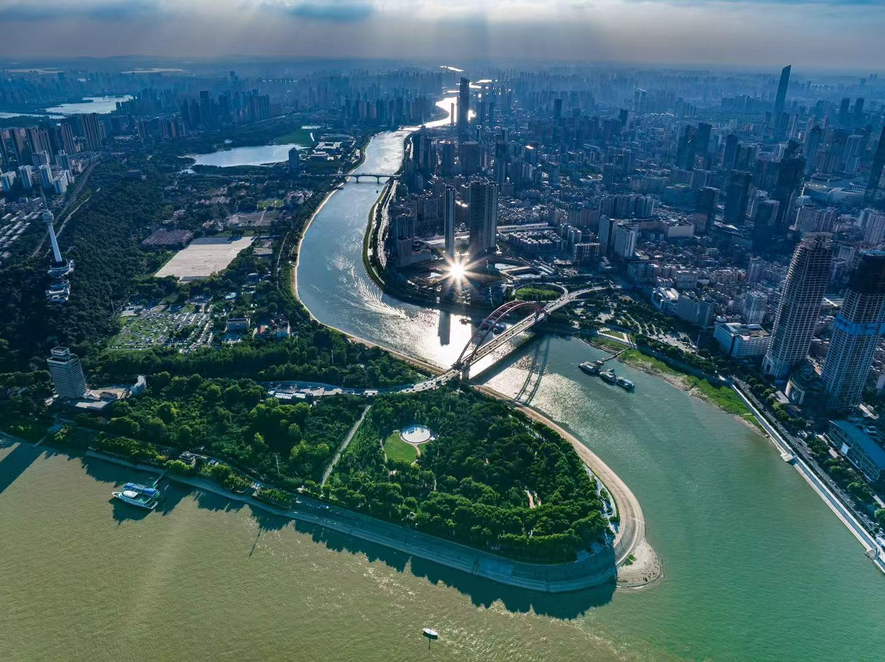

River City Heritage · Two Rivers Meet
Wuhan is embraced by two great rivers—the Yangtze and the Han. Their meeting has shaped the city's distinctive urban pattern and broad civic temperament. River winds, harbor memory, and the openness of great waters have long influenced the city's rhythm, giving Wuhan a confident, spirited root in scale, movement, and enduring geographical identity.